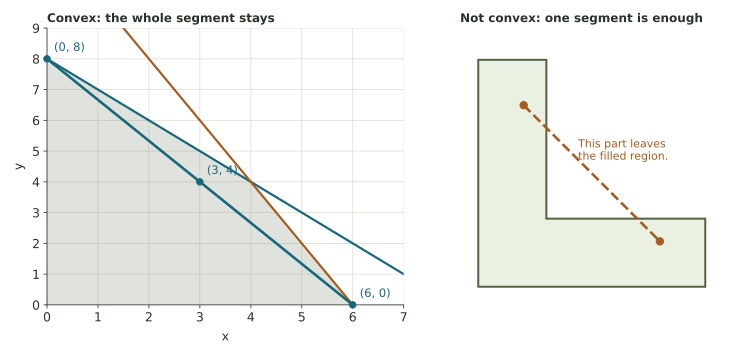

From allowable points to a best plan.
Practice convexity, resource units, boundary lines, feasible corners, and objective comparisons—one careful step at a time.
Five investigations: translate, check, draw, compare
Keep the reading and both explorers available. Each part uses its own stated numbers. A preset from another example is not evidence for the current system until you match the constraints.
- A point (x,y) records one complete plan, in that order.
- Feasible means satisfying every constraint, including nonnegativity.
- A boundary intercept or line intersection is only a candidate corner.
- Use fractions or decimals in number fields; check the units before reporting a value.
Your earlier responses are restored when available. Feedback appears beside each answer. Written explanations are saved but not automatically graded. Use the named printout at the end to keep or submit your work as directed.
Does the whole segment stay in the set?
A set is convex when the segment between any two of its points stays entirely in the set. “Filled” includes the interior. One segment leaving the set is enough to establish nonconvexity.

Read x + 2y ≤ 8
Example · A different resource limit
For x+3y≤12, the boundary intercepts are (12,0) and (0,4). At (2,3), the resource use is 2+3(3)=11, below 12. This point lies on the permitted side. The equality locates the line; substitution decides which side is allowed.
Now use x+2y≤8. Find the boundary intercepts by setting one coordinate to zero. Then test each point.
Two products share a 60-hour resource
A workshop makes x units of product A and y units of product B. Each A uses 3 labor-hours; each B uses 2 labor-hours. There are at most 60 labor-hours, so 3x+2y≤60. Here x and y count products, not hours: the coefficients convert product counts into hours.
Example · Use the units to check the model
At (4,5), the labor use is 3(4)+2(5)=22 hours. The remaining 60−22=38 hours are slack for this constraint. A resource calculation is not an objective value unless the objective itself measures that resource.
Find every feasible vertex
Use the lab preset in the feasible-region explorer, or draw the boundaries yourself. To find the non-axis intersection, subtract x+y=7 from 2x+y=10. To find an axis corner, use the tighter of the limits on that axis.
Example · Why we check candidate intersections
In x+y≤6 and x+2y≤8, the two non-axis boundaries meet at (4,2). The first boundary’s intercept (6,0) passes the other limit, but its intercept (0,6) does not: x+2y would be 12. Only feasible boundary intersections become corners.
Calculate every score before comparing
A different bounded polygon has vertices (0,0), (6,0), (4,3), and (0,5), in boundary order. Compare f=3x+2y and g=x+4y. The corner-point principle applies because the region is a nonempty filled polygon with included boundaries and both objectives are linear.
Example · Score a point, not a coordinate separately
At (2,4), the expression 3x+2y is 3(2)+2(4)=14. A large x-value alone does not tell us the score; both coordinates and both coefficients matter.
f = 3x + 2y
g = x + 4y
Explain the method in the setting
Continue with the extension for complete maximum and minimum models, then apply the method to the workshop. Your number fields and written responses are preserved when you return to this browser.